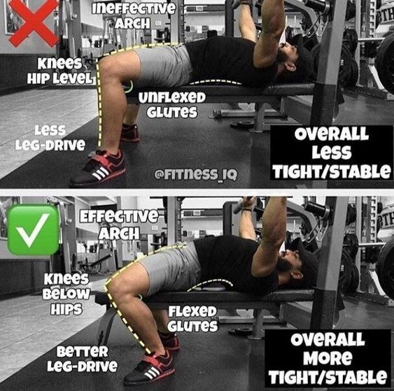
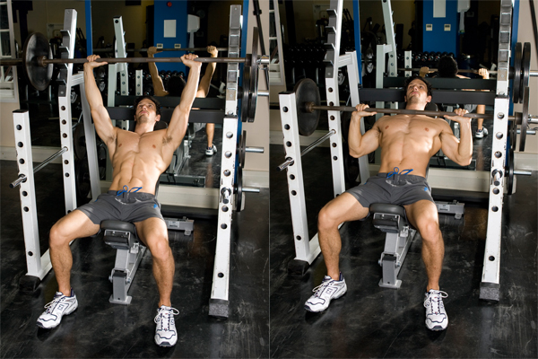
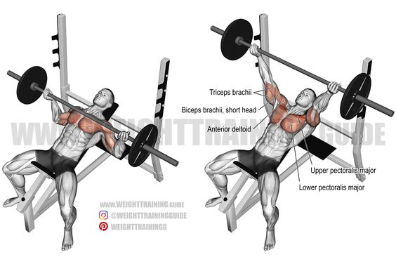
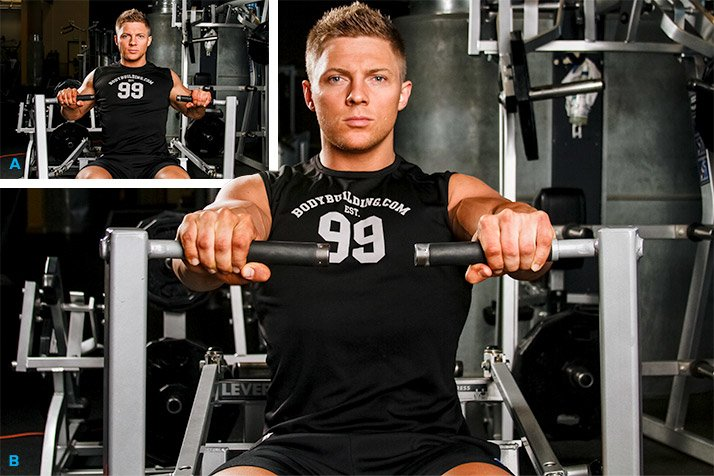
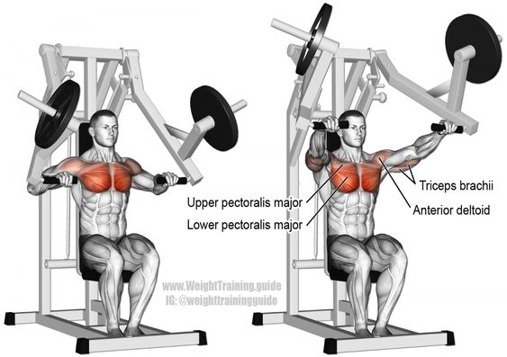
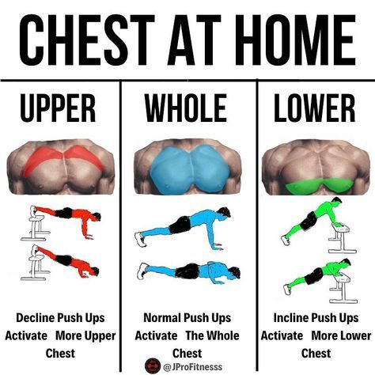
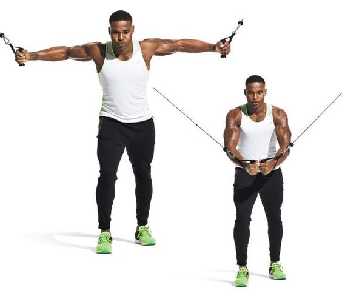

The chest muscles could be considered a defining part of strength anatomy. They are involved in actions such as squeezing a set of loppers to cut a tree branch and pushing a door open. They are also the primary muscles referenced when debating upper body strength (“How much can you bench, bro?”). For body builders and those interested in general muscular aesthetics, the chest muscles are the defining part of muscle mass. Powerlifters rely on them for the bench press to score the greatest lift.
Best Chest exercices
Barbell Bench Press
Barbell Bench Press is one of the most popular lifts in the gym for a reason. For one, the standard barbell bench allows you to move the most weight. It's also an easier lift to control than pressing with heavy dumbbells. The exercise is also relatively easy to spot—so don't be afraid to ask for one!
- 

Incline Bench Press
Not only is the incline bench press a classic way to build the upper chest, many lifters find them to be a more comfortable "main lift" for the shoulders than flat benching. It's great with a barbell or multi-grip bar, but maybe be even better with dumbbells, since you can customize your grip to increase focus on the upper pecs.
- 
- 
Machine Chest Press
Free-weight pressing moves on a flat bench are great, but machine press and cable press variations have some unique benefits. For one, it's easier to slow down the repetition, both in the concentric and eccentric phases. Stack-loaded machines are also great for quickly doing dropsets.
- 
- 
Push-Up

"Yeah, but they're just push-ups," you say. "They're definitely not enough to make you strong." Believe it or not, an in-depth analysis found that push-ups and bench presses are similar in both muscle activation and overall muscle gains. This doesn't mean push-ups should be all you do, but it means they definitely should have a place in your repertoire.

- 
Cable crossover

the cable cross-over is an isolation move that will directly target the chest muscles. It’s an exercise favoured by bodybuilders because it does wonders for the definition of your chest muscles.
The cable crossover might be just what you need if you don’t enjoy laying down on the bench and pressing plates, or dumbbells, up and down.
- 